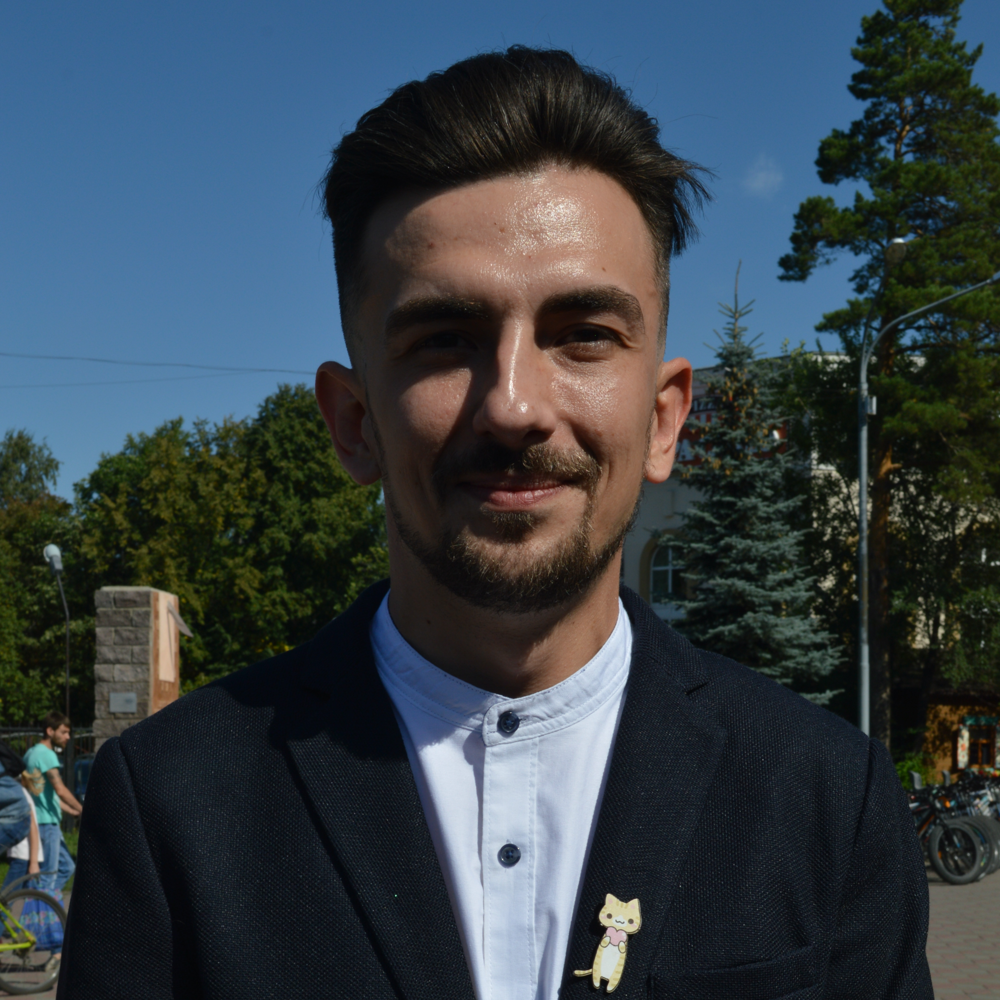
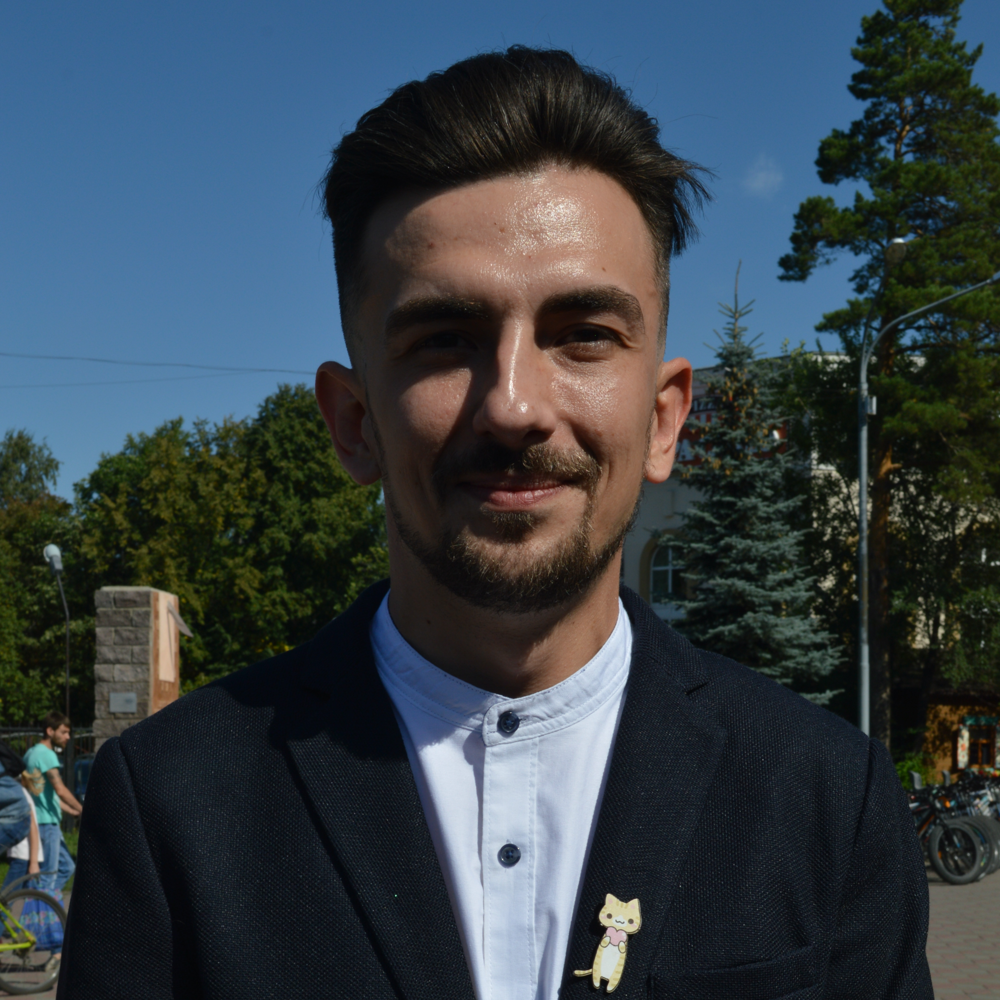

О Себе

Я родился и вырос в городе Челябинске.
Как только у меня появился первый ПК, мне стало интересно как работают и создаются программы.
В школе были курсы программирования на которые я и пошел.
После школы хотел поступать на профессии связаные с IT, но родители настояли на другом.
И мне пришлось осваивать другую профессию.
Но вот теперь в 30 лет решил осуществить свою мечту.
Почитав интернет на тему: что сейчас актуально, пришел к тому что мне интереснее всего Frontend и Web-разработка.
Образование
- 1997г. - 2005г.: Школа №155
- 2005г. - 2009г.: "Челябинский Монтажный Колледж" по специальности: "Водоснабжение и Водоотведение"
- 2009г. - бросил: "ЮжноУРальский Государственный Университет" по специальности "Водоснабжение и Водоотведение"
Место работы
- 2008г. - 2010г.: ООО СФ "Челябкоммуникация" Монтажник
- 2010г. - 2011г.: Служба в ВС РФ
- 2011г. - 2012г.: ООО СФ "Челябкоммуникация" Монтажник
- 2012г. - 2014г.: ООО СЦ "Мотив" Монтажник
- 2014г. - Настоящее время: Магазин Сантехники "Остров Сокровищ" Старший Продавец
Мой опыт
С начала Октября самостоятельно осваиваю Html и Css
Мои фото

 
